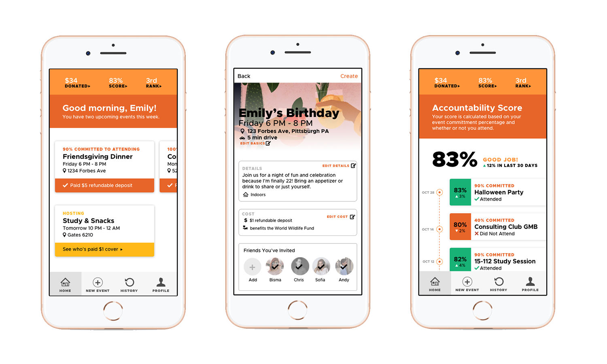
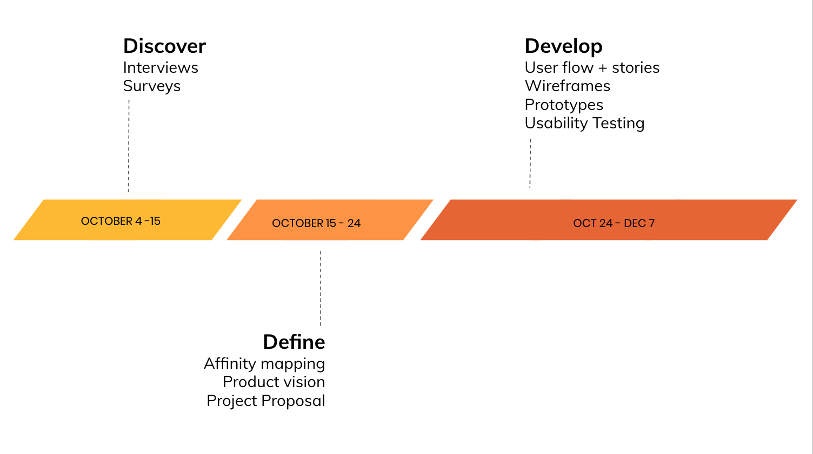

<!DOCTYPE html>
<html>

  <head>
    <title>Emily Porat | RSVPd</title>
    <link rel="stylesheet" type="text/css" href="styles/global2.css">
    <link rel="stylesheet" type="text/css" href="styles/nav.css">
    <link rel="stylesheet" type="text/css" href="styles/rsvpd.css">
    <link rel="stylesheet" type="text/css" href="styles/contact.css">
    <script src="https://ajax.googleapis.com/ajax/libs/jquery/1.9.1/jquery.min.js"></script>
    <link rel="shortcut icon" type="image/x-icon" href="pics/favicon.ico" />
    <link rel="stylesheet" href="https://cdnjs.cloudflare.com/ajax/libs/font-awesome/4.7.0/css/font-awesome.min.css">
    <!-- Global site tag (gtag.js) - Google Analytics -->
    <script async src="https://www.googletagmanager.com/gtag/js?id=UA-119412150-1"></script>
    <script>
      window.dataLayer = window.dataLayer || [];
      function gtag(){dataLayer.push(arguments);}
      gtag('js', new Date());

      gtag('config', 'UA-119412150-1');

      // load other reused files
      $(function() {
      	$('#nav').load('http://emilyporat.com/nav.html');
      	$('#footer').load('http://emilyporat.com/footer.html');
      });
    </script>
  </head>

  </html>
  <body>
    <meta name="viewport" content="width=device-width">
    <div id="nav"></div>
	
	
	  	<div class="page-title">RSVPd</div>
	  	<div class="project-info">
	  		Fall 2018 | Information Systems Capstone Project | <a href="https://sketch.cloud/s/GJGWD">Wires</a>
	  	</div>
	  	
	  	<div id="ld" class="margin-medium">

	  	<div class="content">
			<div class="context-summary">
			<div class="context-title">Context</div>
				<p>
				I completed this project through the Innovation in Information Systems course. The purpose of this capstone class was to teach us how innovation works: to identify a real problem or business need and apply structured tools in order to solve it. Through the project section of the class, teams worked to identify a problem and develop a minimum viable product (MVP) that solves it.
				</p>
				<p>
				Our team focused on the problem of attendance at group events. It's a universal issue: people say they'll attend an event, and most of the time, at least a portion of the attendees don't show up. The bigger the event, the bigger the problem. When friends flake, event organizers lose resources, time, and money. Our mobile app, RSVPd, serves to solve this problem by providing predictability, motivation, and accountability. We built out the MVP with Proto.IO, which allowed us to capture user input and display it (unlike most other prototyping tools).
				</p>


			</div>
			
			<div class="context-specifics">
				<div class="context-subtitle">Team</div>
					<div class="context-description">
					My teammates were two other IS seniors. I was the lead designer.</div>
				<div class="context-subtitle">Skills</div> 
					<div class="context-description">User Research, Data Analysis, Affinity Mapping, Product Visioning, User Stories, Usability Testing, Wireframing, Prototyping, Presenting</div>
				<div class="context-subtitle">Tools</div> 
					<div class="context-description">Sketch, Adobe InDesign, Proto.IO, PowerPoint</div>
			</div>


		  	<div class="process-title last"></div>
		  	<div class="panel">
		  		
			  	
			  	<div class="inner-text">
			  		The project was broken up into three phases over the semester. 
			  	</div>


		  	</div>

	  	</div>
		  	<a href="justharvest.html" class="next-project" style="background-color: #ff943a; float: right"> 
		  		COMMUNITY TABLE
		  		<i class="fa fa-caret-right"></i>
		  	</a>

		  	<a href="atlantis.html" class="next-project" style="background-color: #ff943a; float: left"> 
		  		<i class="fa fa-caret-left"></i>
		  		ATLANTIS HUB
		  	</a>
	  	</div>
  	</div>
  	<div id="footer"></div>
  	</meta>
  </body>

  <script src="js/general.js"></script>

</html>